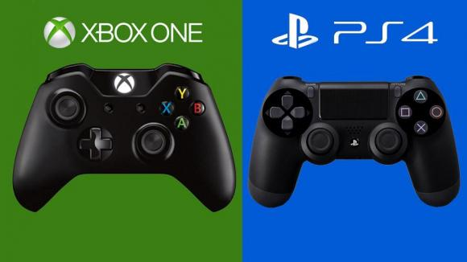

Os chefões chegaram: Xbox One e PS4(){
Notícias
Por: Tassyo Tchesco
Novos consoles apresentados na E3 de 2013
A 8ª geração de consoles chegou prometendo uma revolução em jogabilidade e processamento gráfico. Iniciada pelo console da Nintendo, Wii U, agora é a vez dos tubarões da área chegarem. Após vários rumores sobre os consoles finalmente Xbox One e Playstation 4 foram anunciados na E3, a maior feira de jogos eletrônicos do mundo.
A semelhança
Tanto a Microsoft quanto a Sony não abriram mão de investimento para fazerem um console com alto poder de processamento, deixando de lado os 3 núcleos do Xbox 360 e os 7 núcleos do PS3 e ambos adotando um ADM Jaguar de 8 Núcleos para os novíssimos Xbox One e PS4. A arquitetura e a capacidade de armazenamento também são iguais, ambos contando com arquitetura X86-64 e capacidade de 500 Gb de armazenamento. Também são iguais as mídias dos games, onde as empresas adotarão o Blu-ray. A conectividade, como era de se esperar, trouxe nos consoles o USB 3.0 além da saída HDMI, entrada de rede e WI-FI.
A diferença
As diferenças dos consoles da empresa norte americana e da empresa japonesa sempre geram polêmicas e mexem bastante com o mercado de games. Começando pelo poder de processamento, o PS4 virá com 1,84 Tflops contra 1,23 do Xbox One. Além disso a Sony trouxe um console com 8Gb de ram GDDR5 de 5.500 MHz, enquanto a Microsoft trouxe 8Gb DDR3 de 2.133MHz. Quanto as características únicas, o novo Xbox conta com controle por voz e uma biblioteca de jogos nas nuvens, já o novo Playstation conta com a funcionalidade de assistir o gameplay de um amigo e a utilidade do PS Vita como controle extra para os jogos. Ambos poderão ser jogados no modo offline e com games usados, itens que faltaram no lançamento do Xbox e que foi duramente criticada pelos usuários.
.jpg)
A briga entra Xbox One e PS4
O nocaute
A maior crítica sobre os consoles foi a questão do preço, que aliás faz com o que o novo PS4 derrube bastante o Xbox One. A Sony promete trazer seu console por 399 dólares, enquanto a Microsoft anunciou por 499 dólares. Especialistas dizem que o preço pode fazer com o que a Microsoft perca bastante para a Sony. Independente de qual vídeo game será o favorito no natal deste ano, os usuários já podem comemorar muito, porque a promessa são de horas de jogos bastantes imersivos e realísticos, trazendo muita diversão .
}